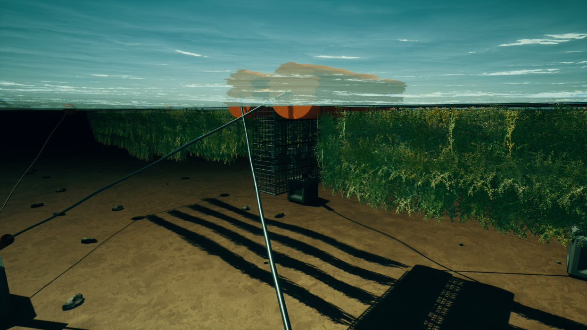

Cayne Layton is the co-founder of Blue Carbon Services, a team of experienced carbon offset experts and marine scientists, specialising in the development and management of Blue Carbon and habitat restoration projects.
The company offers a range of consultancy services to support Blue Carbon project conception, implementation and asset identification for private, public and government organisations throughout Australia and beyond.
In this edited conversation with Peter Green, Cayne spoke about his background and outlook on the seaweed industry before giving some advice for climate-focussed teams.

How has Blue Carbon Services got to where it is now?
Prior to being known as Blue Carbon Services we were academics and have worked in the academic industry for the last decade. We saw a need to link institutional research with people building operations on the ground and that's what motivated us to start BCS. We use our high-level technical expertise and background to act as that bridge and help others achieve outcomes on the ground. There's four cofounders, each with our own area of expertise in this broad carbon, blue carbon marine habitat restoration know-how.

What's the demand like for your services?
The demand is there, as a lot of these industries are really taking off at the moment. That was part of the motivation for us to start the company as we realised the demand was there, people that there wasn't really anyone filling that hole. We would get a lot of inquiries through our university or our current channels. That was just very hard for us to kind of implement and provide advice for or we didn't have time to provide it.

What's your opinion on the seaweed industry at the moment. Where do you think it's going?
It's interesting because seaweed aquaculture has been happening for decades, arguably centuries, but people in the Western world are seeing it as an infant industry. There is a wealth of knowledge for us to lean on. Similar to any industry, there are those individuals who are trying to push ahead and do things that are slightly unfounded, where the science doesn't support them. Once again, that's very much where we see our role fit in. It's here that we can provide a lot of cutting edge technical expertise, and be able to digest new scientific information for our clients.

Have there been any common challenges that the organisations you help face?
A big logistical challenge is regulation. In Australia especially we don't really have the regulation for seaweed industries at the moment. So that's that's very much emerging. There have been cases where somenoe has an investment ready to buy a marine lease, but those leases physically don't exist. So there's very kind of logistic, practical constraints at the moment. More broadly, I'd say hype is something we really are struggling with. We spend a lot of time myth-busting. Providing that pragmatic advice is where we fit in. A lot of the hype is ahead of the science.
So a lot of your research goes towards the restoration of giant kelp forests in Tasmania which have been damaged by climate change. What's your opinion on the role seaweed plays in regulating CO2 on this planet?
So the first big question is scale,.I f we really want to have any impact on this global climate system, seaweed aquaculture is going to have to be global. That's clearly a big problem. People throw around figures , for example stating theat all we need is 10% of the Pacific Ocean. So do you have any idea how big an area that is? Probably bigger than every single aquaculture operation combined in the world at the moment. Slo a lot of the hype there is premature, in my opinion and my kresearch expertise as well kind of suggested that that that heartbeat is premature. In addition, part of all this is that we're getting too focused on this carbon question. Despite our name being Blue Carbon Services, a lot of what we do is also habitat restoration and unlocking all the ecosystem services that healthy habitats provide. That might be kelp forests, or other marine ecosystems like seagrass or salt marshes. We work across the entirety of this blue space. Even if seaweed doesn't end up being as carbon negative as people suggest, it doesn't matter. There are so many incredible ecosystem services that these habitats provide. We still want to be planting and restoring and cultivating them as much as possible.
What's next for blue carbon services?
We will be continuing to solidify relationships with clients, potentially working alongside government in order to quantify and understand blue carbon stocks, and assets effectively. That's a very interesting space in blue carbon. In Australia, the federal government's slowly increasing interest in developing a methodology for blue carbon credits based on salt marshes. This is planning to be implemented towards the end of the year, and when that happens these habitats will suddenly become valuablefinancial assets. That's something we're really looking forward to.
Firstly, just do it. If you're waiting for the right time, you'll probably be waiting forever, there's no right time. Also, don't necessarily feel that you have to stop what you're doing immediately and start something else. There's actually a lot to be said for that more gradual transition from one type of work to another.
And finally, are there any books that you found particularly useful in, in this journey? Or what literature would you recommend reading?
I do a lot of work with indigenous Australians and indigenous Tasmanians and a lot of the way these indigenous communities, approach science and interact and view the natural world is quite unique. I think there are some really important lessons to be gained from those communities, not just in Australia but globally, about how we can interact and manage marine environments. Dark Emu by Bruce Pascoe is a really famous Australian one that's picked up a lot of steam recently. Australia's first naturalists is another really good one, which really highlights early indigenous scientific knowledge that was held in Australia, especially around kind of natural history and zoology.
"Eat Like a Fish" by Bren Smith is a great book. Right now I'm reading a book by Yvon Chouinard, who's the founder of Patagonia, the clothing company. This is great because you get to understand his philosophies, how he thinks about business and how he treats his employees.

Interviewer: Peter Green